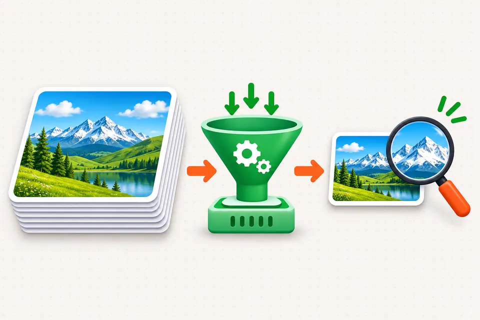
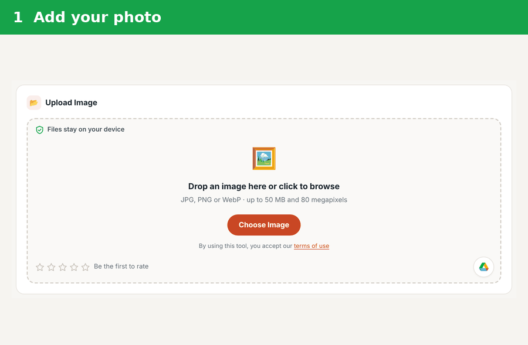
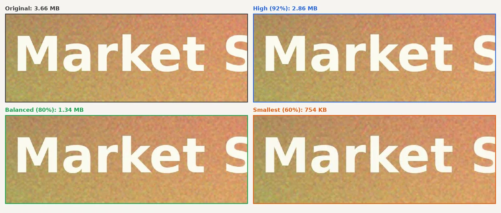
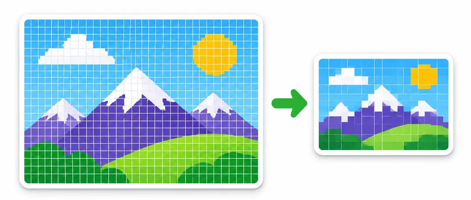
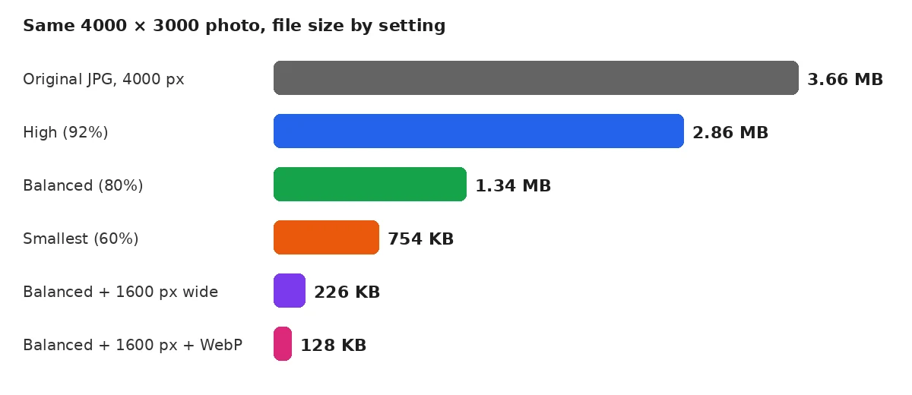

How to Compress Images Without Losing Quality

To compress images without losing quality, first shrink the pixel size to what the page shows. Then save once at about 80% JPEG or WebP quality. Most of the file size goes, and the eye cannot spot the change. Never re-compress an image that is already small.
The free Image Compressor on PDFdukan does both steps in your browser.
What does "without losing quality" really mean?
"Without losing quality" usually means no visible loss, not zero change. Lossless compression keeps every pixel but saves little space. Lossy compression drops detail the eye barely notices, which is where the big savings come from.
Photo editors agree on a middle range. Cupix suggests a Lightroom export quality of 40–80% for web images, and higher for print.
How to compress images without losing quality, step by step
The PDFdukan compressor needs three steps, and the photo stays on your device.
- Add a JPG, PNG or WebP image, up to 50 MB.
- Pick Balanced, then set a smaller width under Size.
- Check the before and after preview, then download.

Which compression setting keeps quality?
Balanced at 80% quality kept the photo looking the same in our test while cutting 63% of the size. Pixel size mattered even more.
| Setting | Size | Saved |
|---|---|---|
| Original, 4000 px wide | 3.66 MB | - |
| High (92%) | 2.86 MB | 22% |
| Balanced (80%) | 1.34 MB | 63% |
| Smallest (60%) | 754 KB | 80% |
| Balanced, 1600 px wide | 226 KB | 94% |
| Balanced, 1600 px, WebP | 128 KB | 97% |

Why does resizing save more than quality settings?
Resizing saves more because pixel count drops with the square of the width. Halving the width leaves a quarter of the pixels. A phone photo 4000 pixels wide shown in an 800-pixel blog column wastes most of its data.


Which format should you use?
Use JPG or WebP for photos and PNG only for graphics or transparency. ToolCrix notes that photographic PNGs can be five to ten times heavier than a similar JPG.
Frequently Asked Questions
Can you compress images without losing quality?
Yes, images compress with no visible loss when you resize first and save once. Set the width to the display size, then save at about 80%. Check the result at 100% zoom before you replace the original.
Why did my image get bigger after compressing?
An image gets bigger when it was already compressed harder than your new setting. The PDFdukan compressor now keeps your original file in that case.
Should I compress an image more than once?
No, compress an image only once. Each lossy save drops more detail, and the damage adds up. Keep the original and compress a fresh copy when you need a new size.
Does compressing remove location data?
Yes, in our test the compressed file had no GPS or camera data. A file kept as the original still has it.
Is WebP better than JPG for the web?
WebP is usually smaller at the same look. Our resized photo was 128 KB as WebP and 226 KB as JPG.
How do I compress an image to a set size, like 100 KB?
Choose Target size and pick a preset from 20 KB to 1 MB. The tool finds the highest quality that fits. For images headed into a PDF, see JPG to PDF without losing quality.